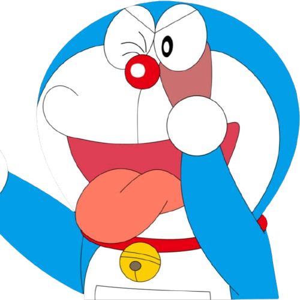

"你有冇搞錯啊？我等咗你成個鐘，你仲未到！如果夜得滯我就走先架喇。下次記住準時啲，唔好再遲到，唔係我請你食檸檬呀！"
Doraemon is one of the most iconic and beloved Japanese manga and anime franchises of all time. Created by the legendary manga artist duo Fujiko F. Fujio (Hiroshi Fujimoto and Motoo Abiko) in 1969, it has evolved into a global cultural phenomenon, particularly in Asia.